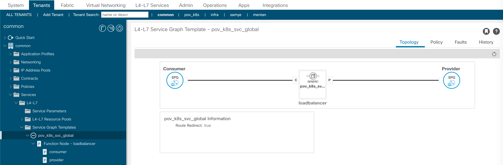

部署Guestbook容器应用
在本演示用，使用著名的Guestbook来演示容器应用，从下面的链接下载all-in-one guestbook yaml file：
1. SSH登录Master Node, 创建guestbook namespace
SSH login to master node
kubectl create namespace guestbook
2. 下载all-in-one guestbook yaml file, 部署在guestbook namespace
wget https://raw.githubusercontent.com/kubernetes/examples/master/guestbook/all-in-one/guestbook-all-in-one.yaml
kubectl -n guestbook apply -f guestbook-all-in-one.yaml
检查状态
root@master:~# kubectl -n guestbook get pod -o wide
NAME READY STATUS RESTARTS AGE IP NODE NOMINATED NODE READINESS GATES
frontend-74b4665db5-b9wqh 1/1 Running 0 4h24m 10.2.0.61 worker1 <none> <none>
frontend-74b4665db5-j6jhw 1/1 Running 0 4h24m 10.2.0.60 worker1 <none> <none>
frontend-74b4665db5-pzcmx 1/1 Running 0 4h24m 10.2.0.59 worker1 <none> <none>
redis-master-6fbbc44567-8zn45 1/1 Running 0 4h24m 10.2.0.56 worker1 <none> <none>
redis-slave-74ccb764fc-b8mjx 1/1 Running 0 4h24m 10.2.0.57 worker1 <none> <none>
redis-slave-74ccb764fc-kz8j5 1/1 Running 0 4h24m 10.2.0.58 worker1 <none> <none>
root@master:~#
root@master:~# kubectl -n guestbook get svc
3. 将guestbook namespace关联至单独的EPG
手工创建新的EPG guestbook，选择kube-pod-bd，继承kube-default EPG的contract，关联至K8s VMM domain
使用acikubectl工具将guestbook namespace添加annotate至EPG
root@master:~# acikubectl set default-eg namespace guestbook -t pov_k8s -a kubernetes -g guestbook
Setting default endpoint group:
Endpoint Group:
Tenant: mykube
App profile: kubernetes
Endpoint group: guestbook
root@master:~#
或者标准的kubectl修改annotate
kubectl annotate namespace guestbook 'opflex.cisco.com/endpoint-group={"tenant":"pov_k8s","app-profile":"kubernetes","name":"guestbook"}'
通过下面的指令检查新的annotate
root@master:~# kubectl describe namespace guestbook
Name: guestbook
Labels: <none>
Annotations: opflex.cisco.com/endpoint-group: {"tenant":"pov_k8s","app-profile":"kubernetes","name":"guestbook"}
Status: Active
从ACI进行检查，发现guestbook相关的pod从kube-default转移到了新建的guestbook EPG
4. 对外暴露guestbook服务
先检查ACI CNI自动创建的L4-7 service graph配置
In common tenant, 自动创建L4-7 device
service BD用于PBR
service graph template

下面开始进行配置对外暴露guestbook service
将frontend ServiceType由缺省的NodePort改为LoadBalancer
ServiceType的几种类型：
* ClusterIP: 缺省类型，暴露cluster-internal IP, 只能从cluster内部访问
* NodePort: 通过node IP + PORT的方式暴露，从外部以 <NodeIP>:<NodePort>的方式访问
* LoadBalancer: 通过外部load balancer的External IP暴露，从外部通过External IP地址访问
* ExternalName： 通过URL暴露
编辑frontend service, 将type: NodePort改为type: LoadBalancer
kubectl -n guestbook edit svc frontend
<snip>
type: LoadBalancer
现在出现了EXTERNAL-IP
mentan@master:~$ kubectl -n guestbook get svc frontend
NAME TYPE CLUSTER-IP EXTERNAL-IP PORT(S) AGE
frontend LoadBalancer 172.16.5.43 172.16.2.2 80:31492/TCP 91m
检查L3out Router，确保EXTERNA-IP被正确的进行了SNAT
IPN_N9K# show ip nat translations
Pro Inside global Inside local Outside local Outside global
any 10.75.53.112 172.16.2.2 --- ---
如果一切正常，此时应该可以通过EXTERNAL-IP访问Guestbook UI, 可以输入信息进行留言
检查ACI上的变化：
PBR Policy
新 service external EPG in L3out
contract between service external EPG and default external EPG
新 service graph
5. 对容器资源进行伸缩
将frontend的pods从3个扩展到5个
kubectl -n guestbook scale deployment frontend --replicas=5
mentan@master:~$ kubectl get deployment --all-namespaces
NAMESPACE NAME READY UP-TO-DATE AVAILABLE AGE
guestbook frontend 5/5 5 5 13h
从ACI中可以清楚的看到pod数量的变化
6. 容器网络安全控制
检查guestbook应用，可以正常留言。下面我们将通过EPG的细分，实现用contract来实现安全控制。
在ACI中创建两个EPG, 分别为frontend, backend。注意下面EPG的参数

修改annotation，将EPG从Name space细化为Deployment。
kubectl edit namespace guestbook
删除下面的annotation, pods将从guestbook EPG回到kube-default EPG
annotations:
opflex.cisco.com/endpoint-group: '{"tenant":"pov_k8s","app-profile":"kubernetes","name":"guestbook"}'
使用下面的指令修改deployment的annotation
- 增加frontend deployment的annotation
kubectl edit deployment frontend -n guestbook 在annotation下增加一行 opflex.cisco.com/endpoint-group: '{"tenant":"pov_k8s","app-profile":"kubernetes","name":"frontend"}'
检查ACI frontend EPG, 发现frontend pods已经从kube-default转移至frontend EPG
- 增加backend deployment的annotation
kubectl edit deployment redis-master -n guestbook kubectl edit deployment redis-slave -n guestbook 在annotation下增加一行 opflex.cisco.com/endpoint-group: '{"tenant":"pov_k8s","app-profile":"kubernetes","name":"backend"}'
检查ACI backend EPG, 发现redis-* pods已经从kube-default转移至backend EPG
回到guestbook 网站, 网站可以正常访问但此时已经不能留言。
下面我们将在frontend和backend EPG之间添加contract，实现前后台的正常通讯。
在pov_k8s tenant创建contact guestbook
在backend EPG将新创建的guestbook添加provider contract
在frontend EPG将新创建的guestbook添加consumer contract
最终的contract topology如下
再回到guestbook 网站, 网站可以正常访问并留言。